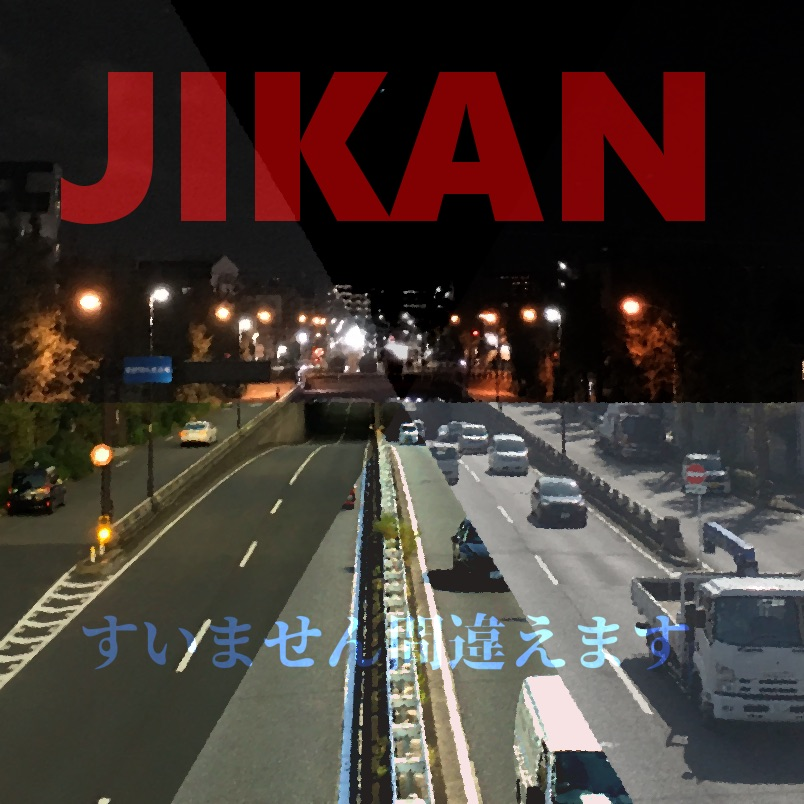
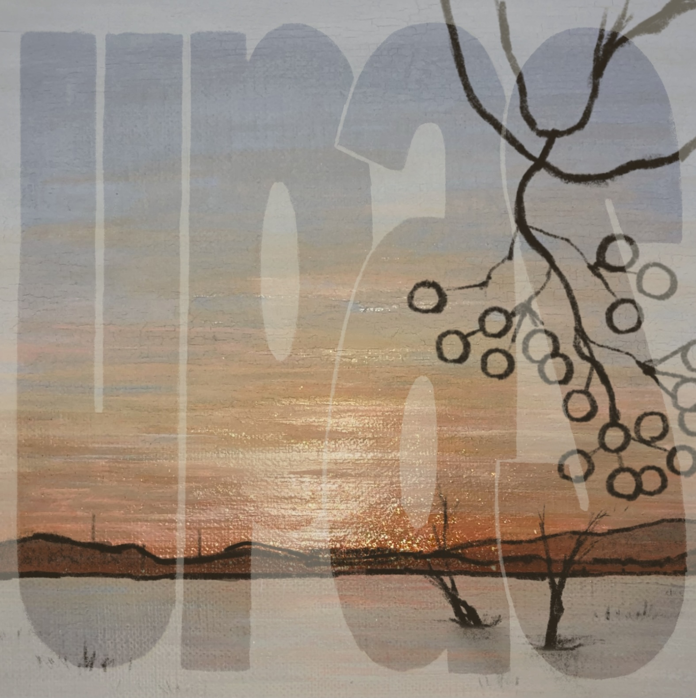

About Me
My research focuses on signal processing, particularly signal processing techniques applied to audio recordings of string instruments, and also includes research in statistical machine learning. I received Ph.D. from XYZ University.
Publications
- Natsuki Yoshino, Akira Tanaka, Computationally efficient selection criterion of initial equation in STLN-based structured low-rank approximation, Journal of Computational and Applied Mathematics, Volume 470,2025, ISSN 0377-0427, https://www.sciencedirect.com/science/article/pii/S0377042725002171
- Robust Initialization Strategies for Hankel Structured Low-Rank Approximation via Variable Projection
APSIPA ASC 2025
Creative Works
-

"JIKAN" – Suimasen, Machigaimasu (1st Album, 2020)
Role: Composed tracks 4–6, mixing (tracks 4–6), mastering (all tracks).
Description: A collection of six pieces themed around different times of day, created with a free and spontaneous approach. -

"Upas" – Suimasen, Machigaimasu (2nd Album, 2021)
Role: Composed tracks 1 & 4, mixing and mastering (all tracks), violin performance (tracks 1, 2 & 4).
Description: Four tracks inspired by "winter in Hokkaido," ranging from classic jazz to electronic styles, including trance and lo-fi.
 "Paralleled Trajectory" – 嘘と虚無の木漏れ日 (Uso to Kyomu no komorebi) (2022)
"Paralleled Trajectory" – 嘘と虚無の木漏れ日 (Uso to Kyomu no komorebi) (2022)Role: Arrangement and Mixing 4th track, strings performance (tracks 2, 4).
Description: aaa
 "Crescent Tears" – 嘘と虚無の木漏れ日 (Uso to Kyomu no komorebi) (2022)
"Crescent Tears" – 嘘と虚無の木漏れ日 (Uso to Kyomu no komorebi) (2022)Role: Arrangement and Mixing 4th track, strings performance (tracks 1, 4).
Description: aaa
Contact
Email: mailto:n_yoshino@ist.hokudai.ac.jp
GitHub: https://github.com/kadecl
Twitter: https://twitter.com/violalgebra